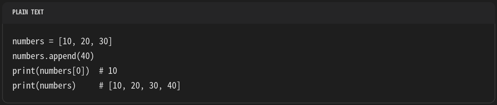
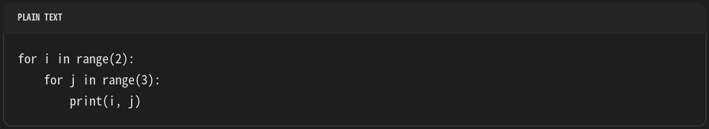
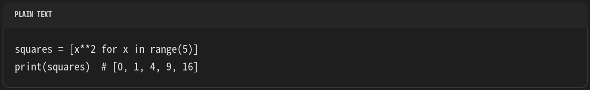
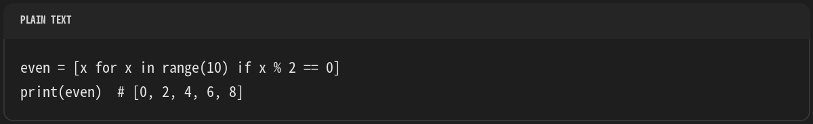
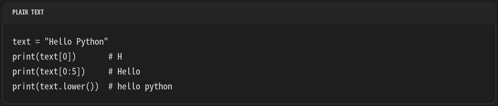
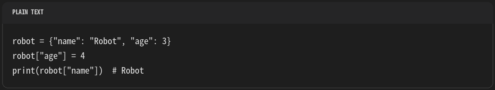
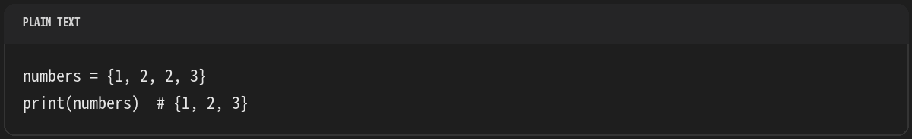

📚 2주차 Python 기초&심화 문법 (2026.10.15 Thu ~ 2026.10.20 Tue)
Total : 4 days
📕 B. Iterables (2026.10.16 Fri)
📃 a. List (리스트)
- List : 여러 데이터를 순서대로 저장하는 자료형
- 순서가 있고, 수정·추가·삭제 가능 (Mutable)
- 인덱스는
0부터 시작
| 문법 | 기능 |
|---|---|
list[0] | 첫 번째 요소 조회 |
list.append(x) | 요소 추가 |
list.remove(x) | 특정 값 삭제 |
list.pop() | 마지막 요소 삭제 및 반환 |
len(list) | 요소 개수 확인 |

PLAIN TEXT 코드
📃 b. Nested Loop (중첩 반복문)
- Nested Loop : 반복문 안에 또 다른 반복문을 작성하는 구조
- 바깥쪽 반복이 한 번 실행될 때 안쪽 반복이 모두 실행됨
- 표, 좌표, 조합 등 여러 단계의 반복 작업에 활용

PLAIN TEXT 코드
출력: (0,0), (0,1), (0,2), (1,0), (1,1), (1,2)
📃 c. List Comprehension (리스트 컴프리헨션)
- 반복문을 활용해 리스트를 간결하게 생성하는 문법
- 조건을 추가해 특정 데이터만 선택 가능

PLAIN TEXT 코드

PLAIN TEXT 코드
기본 구조: [표현식 for 변수 in 반복가능한객체 if 조건]
📃 d. String (문자열)
- String (
str) : 문자들의 연속된 데이터 - 순서가 있으며, 인덱싱과 슬라이싱 가능
- 문자열은 생성 후 개별 문자를 직접 수정할 수 없음 (Immutable)
| 문법 | 기능 |
|---|---|
text[0] | 첫 번째 문자 |
text[0:3] | 0번부터 2번까지 추출 |
text.lower() | 소문자로 변환 |
text.upper() | 대문자로 변환 |
text.strip() | 양끝 공백 제거 |
text.split() | 문자열 분리 |
"-".join(list) | 문자열 연결 |

PLAIN TEXT 코드
📃 e. Tuple, Dictionary, Set (튜플, 딕셔너리, 세트)
| 자료형 | 특징 | 예시 |
|---|---|---|
Tuple (tuple) | 순서 있음, 수정 불가 | (10, 20, 30) |
Dictionary (dict) | 키와 값으로 데이터 저장 | {"name": "Robot", "age": 3} |
Set (set) | 중복 제거, 순서 기반 접근 불가 | {1, 2, 3} |
Tuple
- 생성 후 요소 변경 불가 (Immutable)
- 좌표나 변경하지 않을 데이터 저장에 활용
PLAIN TEXT 코드
Dictionary
key: value형태로 데이터 저장- 키를 통해 값을 조회하고 수정 가능

PLAIN TEXT 코드
Set
- 중복된 값을 자동으로 제거
- 합집합(
|), 교집합(&), 차집합() 연산 가능

PLAIN TEXT 코드
💡 핵심 요약
- List : 순서가 있고 수정 가능한 데이터 목록
- Nested Loop : 반복문 안에서 반복문 실행
- List Comprehension : 짧은 문법으로 리스트 생성
- String : 문자열 처리와 인덱싱·슬라이싱
- Tuple : 순서가 있고 수정할 수 없는 데이터
- Dictionary : 키와 값으로 데이터 관리
- Set : 중복 제거 및 집합 연산
🎯 학습 목표: Python의 주요 자료형과 반복 가능한 객체(Iterable)를 이해하고, 데이터를 효율적으로 저장·조회·처리할 수 있다.